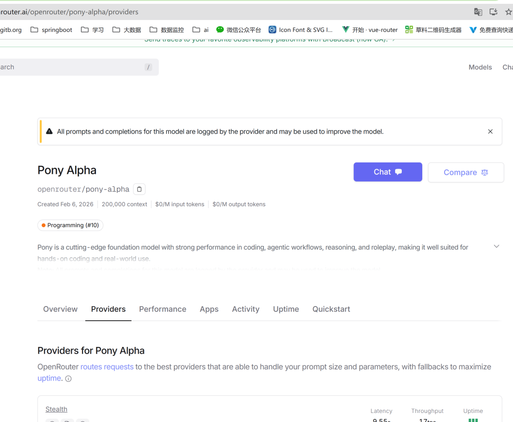
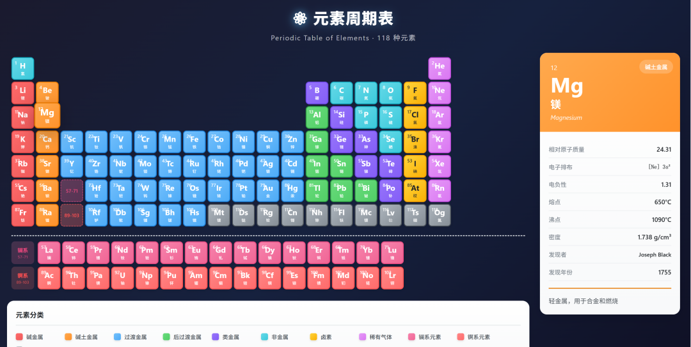
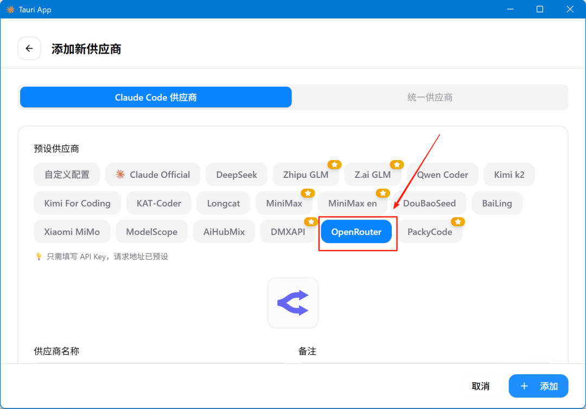
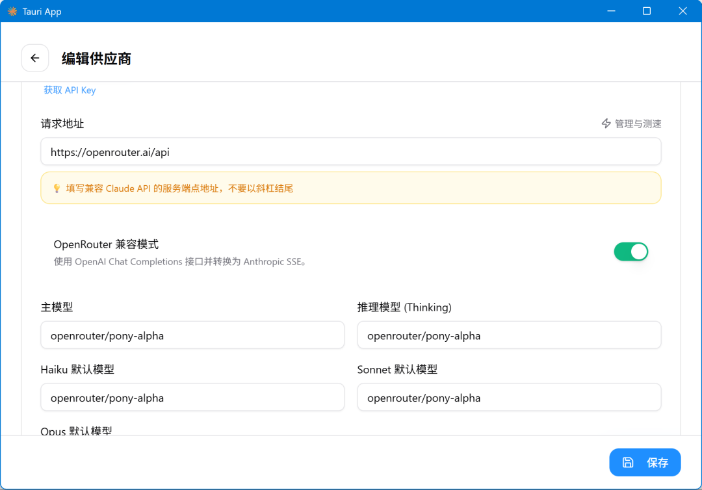
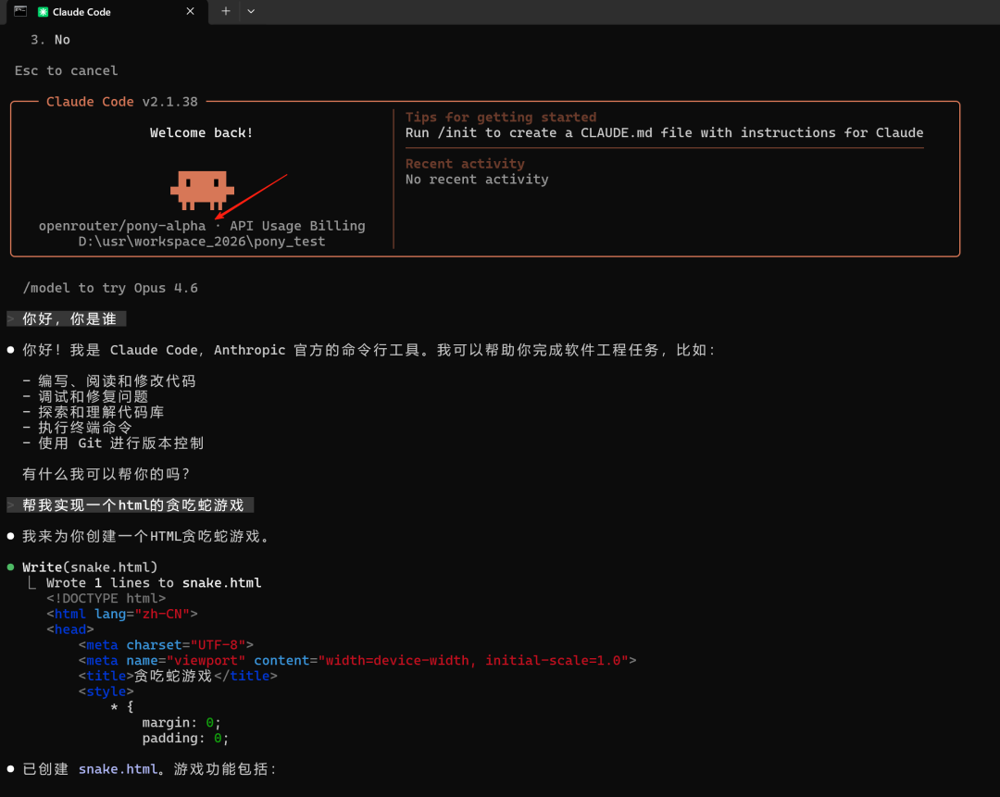

这两天，一款神秘的模型，在模型聚合平台OpenRouter上悄然走红。
一个没有发布会、没有论文、甚至连厂商都不愿意署名的模型，在全球最大的模型聚合平台 OpenRouter 上悄然上架。
它叫 Pony Alpha —— 一匹来路不明的"神秘小马"。

作为 Claude Code 的深度用户，我的第一反应不是围观，而是——
能不能把它接进我的工具链？
折腾了一番，成功了。👇
🐴 Pony Alpha 是什么？
先上一张身份证：
🔥 四大核心能力
① 编程 —— Opus 级别
不是"还行"，是真的达到了 Claude Opus 4.5 的水准，部分编码场景甚至反超。
② 架构师思维
它不只是写代码。面对复杂任务，它会先分析需求、拆解系统、规划模块，然后再动手。像一个资深架构师，而不是一个只会 copy-paste 的实习生。
③ Agent 工作流优化
工具调用准确性极高，天然适合 Claude Code 的 Agentic Coding 方式 —— 给它一个目标，它可以自主推进数小时。
④ 超长输出
131K 最大输出，一次性生成完整项目毫无压力。
注：以上能力描述来自网络信息
🕵️ 身世之谜
这匹"小马"的身份,成了 AI 圈最大的悬案。
线索一:名字暗示
"Pony"(小马)+ 2026 马年 —— 这么明显的文化符号,很难不让人想到中国厂商。
线索二:技术指纹
有开发者扒出,Pony Alpha 的 Tokenizer 与智谱 GLM-4 完全一致。这相当于在代码里找到了亲子鉴定报告。
线索三:自爆身份
更离谱的是 —— 有人直接问它"你是谁",它竟然回答:"我是 GLM"。虽然后来这个回复被修正了,但截图已经满天飞。
线索四:时间吻合
上线时间恰好卡在智谱 GLM-5 发布计划的窗口期,就连智谱的股价都因为这个"意外曝光"大涨一波。
线索五:另一种声音
也有人说是 DeepSeek-V4 的测试版,毕竟 DeepSeek 也有过类似的"神秘投放"操作。
悬疑归悬疑,技术圈的共识很简单 ——
管它是谁,好用就行。 🐴
⚠️ 隐私提醒：官方声明所有 prompt 和输出都会被记录，不建议用于敏感代码。
🧪 我的实测：两道原创考题
网上大家都在测"做仪表盘""画 SVG""写游戏"。
我换了两道更刁钻的题目，看看这匹小马的真实成色。
考题一：一句话生成「交互式元素周期表」
Prompt：
请用一个 HTML 文件实现交互式元素周期表：
- 按真实布局排列全部 118 个元素
- 每格显示原子序数、符号和中文名
- 不同族用不同颜色区分
- 鼠标悬停放大并显示详细信息卡片
- 加入平滑动画效果这道题难在哪？
结果：一个 prompt → 一个文件 → 一次搞定 ✅
数据准确，布局标准，配色专业，动画流畅。👇

考题二:算法可视化 ——「十大排序算法竞速擂台」
Prompt:
请用一个 HTML 文件实现排序算法可视化竞技场:
- 同时展示 10 种排序算法(冒泡、选择、插入、希尔、归并、快速、堆排序、计数、桶、基数)
- 每个算法用独立的柱状图显示排序过程
- 用不同颜色标记正在比较、交换、已排序的元素
- 统一随机数据,一键启动所有算法同步竞速
- 实时显示每个算法的比较次数、交换次数、耗时
- 可调节数据规模和动画速度
- 包含算法简介和时间复杂度说明这道题考的是什么?
算法实现的准确性 —— 10 种经典算法,每个都有独特的实现逻辑,写错一个细节就会出现明显的 bug。
可视化的同步编排 —— 10 个算法同时运行,动画要同步启动、互不干扰、速度一致,还要实时更新统计数据。
工程化的代码组织 —— 不能写成一坨意大利面,要有清晰的模块划分、统一的接口、可维护的结构。
结果:直接秒了 ✅
点击开始,10 个柱状图同时"醒来" —— 冒泡排序像个勤劳的搬运工逐个冒泡,快速排序像个指挥家挥舞着分治魔法,归并排序展现着优雅的递归之舞。最惊艳的是 计数排序,几乎瞬间完成,像开了挂。
代码结构工整,注释清晰,甚至还给每个算法配了简介和适用场景说明。这哪是 Demo,这是教学级作品。 👇
💡 想体验？ 拿上面两个 prompt 直接去 OpenRouter 试试，感受一下什么叫"架构师思维"。
地址：https://openrouter.ai/chat?models=openrouter/pony-alpha
⚡ 三步接入 Claude Code
说完体验，说说怎么接。
核心思路：把 Claude Code 的 API 指向 OpenRouter → 指定 Pony Alpha 模型。
Step 1️⃣ 拿到 OpenRouter API Key
- 1访问 openrouter.ai 注册账号
- 2进入 Dashboard → API Keys
- 3创建一个新 Key 并保存
Pony Alpha 虽然免费，但调用仍需 API Key。
Step 2️⃣ 配置环境变量
直接用CC Switch 添加一个新模型，截图如下：


最终配置文件如下：
bash
{
"env": {
"ANTHROPIC_AUTH_TOKEN": "sk-or-v1-openrouter key",
"ANTHROPIC_BASE_URL": "https://openrouter.ai/api",
"ANTHROPIC_DEFAULT_HAIKU_MODEL": "openrouter/pony-alpha",
"ANTHROPIC_DEFAULT_OPUS_MODEL": "openrouter/pony-alpha",
"ANTHROPIC_DEFAULT_SONNET_MODEL": "openrouter/pony-alpha",
"ANTHROPIC_MODEL": "openrouter/pony-alpha",
"ANTHROPIC_REASONING_MODEL": "openrouter/pony-alpha"
}
}Step 3️⃣ 重启验证
重启终端 → 启动 Claude Code → 随便问个编程问题 → 搞定 ✅

📌 使用建议
✍️ 写在最后
马年来了一匹小马。
没有名字，没有来历，但它用实力证明了一件事 ——
最好的模型，不一定来自最会开发布会的厂商。
对 Claude Code 用户来说，多一个 Opus 级别的免费选择，何乐不为？
至于 Pony Alpha 揭开真面目的那天 ——
我们拭目以待。 🐴
如果本文对你有帮助，不妨点个免费的赞和收藏备用。
👇 关注Gallop，让AI提升你的效率

👉 添加我的微信（gallop_liu），备注“加群”，交流并分享个人的一些资料。